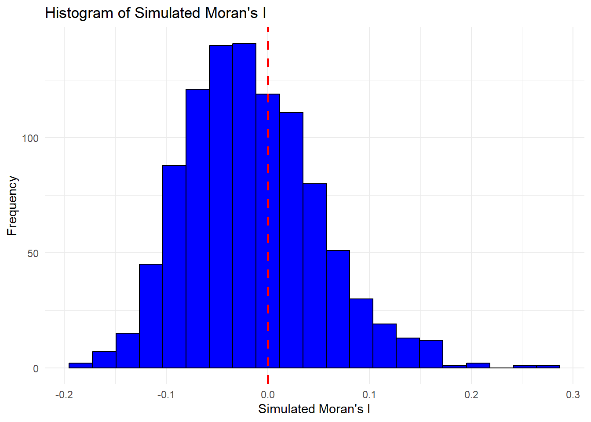

pacman::p_load(sf, spdep, tmap, tidyverse)Hands-on Exercise 6
Global Measures of Spatial Autocorrelation
1.0 Overview
Objective of spatial policy: Ensure equal distribution of development in the province.
Study Purpose: Use spatial statistics to check for even distribution of development.
If Not Even:
Investigate signs of spatial clustering (areas where development is grouped).
Identify where these clusters are located.
Focus: Analyze the spatial pattern of GDP per capita in Hunan Province, China.
2.0 Setup
2.1 Installing R-Packages
sf: Importing and handling geospatial data in R
spdep: Compute spatial weights, global and local spatial autocorrelation statistics
tmap: Trepare cartographic quality chropleth map
tidyverse: For wrangling attribute data in R
2.2 Data Acquisition
Two data sets will be used:
Hunan county boundary layer: a geospatial data set in ESRI shapefile format.Hunan_2012.csv: contains selected Hunan’s local development indicators in 2012.
hunan <- st_read(dsn = "data/geospatial",
layer = "Hunan")Reading layer `Hunan' from data source
`C:\Users\ngkng\Desktop\School\Geo -Local\Hands-on_Ex\Hands-on_Ex06\data\geospatial'
using driver `ESRI Shapefile'
Simple feature collection with 88 features and 7 fields
Geometry type: POLYGON
Dimension: XY
Bounding box: xmin: 108.7831 ymin: 24.6342 xmax: 114.2544 ymax: 30.12812
Geodetic CRS: WGS 84hunan2012 <- read_csv("data/aspatial/Hunan_2012.csv")Rows: 88 Columns: 29
── Column specification ────────────────────────────────────────────────────────
Delimiter: ","
chr (2): County, City
dbl (27): avg_wage, deposite, FAI, Gov_Rev, Gov_Exp, GDP, GDPPC, GIO, Loan, ...
ℹ Use `spec()` to retrieve the full column specification for this data.
ℹ Specify the column types or set `show_col_types = FALSE` to quiet this message.2.3 Performing relational join
hunan <- left_join(hunan,hunan2012) %>%
select(1:4, 7, 15)Joining with `by = join_by(County)`2.4 Visualising Regional Development Indicator
equal <- tm_shape(hunan) +
tm_fill("GDPPC",
n = 5,
style = "equal") +
tm_borders(alpha = 0.5) +
tm_layout(main.title = "Equal interval classification")
quantile <- tm_shape(hunan) +
tm_fill("GDPPC",
n = 5,
style = "quantile") +
tm_borders(alpha = 0.5) +
tm_layout(main.title = "Equal quantile classification")
tmap_arrange(equal,
quantile,
asp=1,
ncol=2)
3.0 Global Measures of Spatial Autocorrelation
Before we can compute the Global Spatial autocorrelation statistics, we need to:
Construct spatial weights for the study area.
- By Computing contiguity weight matrices based on adjacent regions.
- using Queen Criteria:
Default is TRUE: Includes all neighbors that touch at edges or corners.
You can set
queen = FALSEto consider only edge-touching neighbors (first-order neighbors).
So we can Define neighborhood relationships between geographical units (e.g., counties).
wm_q <- poly2nb(hunan,
queen=TRUE)
summary(wm_q)Neighbour list object:
Number of regions: 88
Number of nonzero links: 448
Percentage nonzero weights: 5.785124
Average number of links: 5.090909
Link number distribution:
1 2 3 4 5 6 7 8 9 11
2 2 12 16 24 14 11 4 2 1
2 least connected regions:
30 65 with 1 link
1 most connected region:
85 with 11 links
Note
There are 88 area units in Hunan.
The most connected area unit has 11 neighbours
Only 2 area aunits with 1 link
Now, assign weights to each neighboring polygon.
Method: Assign each using equal weights (style = “W”)
Weight Calculation:
Assign weight of fraction 1/(#ofneighbors) to each neighboring county
Sum the weighted values (e.g., income) from neighbors.
Drawback:
- Edge polygons have fewer neighbors, which can skew results (over- or under-estimate spatial autocorrelation).
Note: For this example, we’ll use style = “W” for simplicity, but other options, like style = “B,” are more robust.
rswm_q <- nb2listw(wm_q,
style="W",
zero.policy = TRUE)
rswm_qCharacteristics of weights list object:
Neighbour list object:
Number of regions: 88
Number of nonzero links: 448
Percentage nonzero weights: 5.785124
Average number of links: 5.090909
Weights style: W
Weights constants summary:
n nn S0 S1 S2
W 88 7744 88 37.86334 365.9147
Note
The function nb2listw() requires an object of class nb (neighborhood list).
style: Defines how weights are calculated. Options include:
“W”: Row standardized weights (sums to 1 across neighbors).
“B”: Basic binary coding (weights are either 0 or 1).
“C”: Globally standardized weights (sums to the total number of connections).
“U”: Equal weights divided by the number of neighbors (sums to 1).
“minmax”: Min-max normalization (scales weights between 0 and 1).
“S”: Variance-stabilizing coding (improves stability of weights).
zero.poly:
If set to TRUE, this includes weights of zero for regions without neighbors.
This results in lag values of zero for those regions, which means they won’t affect the analysis.
It uses a formula that generates a vector of zeros for regions without neighbors, leading to a spatially lagged value of zero for those regions.
Summary
The style argument determines how to handle the weights for neighboring regions.
zero.poly allows for handling of regions that have no neighbors, potentially simplifying analysis but may not always be sensible.
3.0 Global Measures of Spatial Autocorrelation: Moran’s I
moran.test(hunan$GDPPC,
listw=rswm_q,
zero.policy = TRUE,
na.action=na.omit)
Moran I test under randomisation
data: hunan$GDPPC
weights: rswm_q
Moran I statistic standard deviate = 4.7351, p-value = 1.095e-06
alternative hypothesis: greater
sample estimates:
Moran I statistic Expectation Variance
0.300749970 -0.011494253 0.004348351
Findings
Moran I statistic (0.300749970) -> indicate Positive correlation in GDP per capita
SD of 4.7351 -> indicate Moran’s I is > expected value under null hypo
P-value of 1.095e-06 (0.000001095) -> is < 0.05, indicates strong statistical significance
Expectation of -0.011494253 -> we expect slight negative autocorrelation if there were no spatial structure
Since p-value < 0.05, we reject null hypo of no spatial autocorrelation. This strongly suggests there is significant positive spatial clustering of GDPPC in Hunan Province. (Regions with High GDPPC is near areas with high GDPPC
set.seed(1234)
bperm= moran.mc(hunan$GDPPC,
listw=rswm_q,
nsim=999,
zero.policy = TRUE,
na.action=na.omit)
bperm
Monte-Carlo simulation of Moran I
data: hunan$GDPPC
weights: rswm_q
number of simulations + 1: 1000
statistic = 0.30075, observed rank = 1000, p-value = 0.001
alternative hypothesis: greater
Findings
Moran I statistic (0.30075) -> indicate Positive correlation in GDP per capita
P-value of 0.001 -> < 0.05, indicates that the probability of obtaining a Moran’s I value as extreme as the observed >= 1 under the null hypo
Thus, we reject null hypo as p value < 0.05. There is strong evidence that areas with high GDPPC are near areas with high GDPPC
mean(bperm$res[1:999])[1] -0.01504572var(bperm$res[1:999])[1] 0.004371574summary(bperm$res[1:999]) Min. 1st Qu. Median Mean 3rd Qu. Max.
-0.18339 -0.06168 -0.02125 -0.01505 0.02611 0.27593 hist(bperm$res,
freq=TRUE,
breaks=20,
xlab="Simulated Moran's I")
abline(v=0,
col="red") 
# Create a data frame from the simulated results
data <- data.frame(Simulated_Morans_I = bperm$res[1:999])
# Plot using ggplot2
ggplot(data, aes(x = Simulated_Morans_I)) +
geom_histogram(binwidth = (max(data$Simulated_Morans_I) - min(data$Simulated_Morans_I)) / 20,
fill = "blue",
color = "black") +
geom_vline(xintercept = 0,
color = "red",
linetype = "dashed",
size = 1) +
labs(title = "Histogram of Simulated Moran's I",
x = "Simulated Moran's I",
y = "Frequency") +
theme_minimal()Warning: Using `size` aesthetic for lines was deprecated in ggplot2 3.4.0.
ℹ Please use `linewidth` instead.
3.0 Global Measures of Spatial Autocorrelation: Geary’s C
geary.test(hunan$GDPPC, listw=rswm_q)
Geary C test under randomisation
data: hunan$GDPPC
weights: rswm_q
Geary C statistic standard deviate = 3.6108, p-value = 0.0001526
alternative hypothesis: Expectation greater than statistic
sample estimates:
Geary C statistic Expectation Variance
0.6907223 1.0000000 0.0073364
Findings
Geary C statistic (0.6907223) -> indicate a level of spatial autocorrelation, lower value suggest positive spatial autocorrelation
SD of 3.6108 -> indicates significant lower than expected value under null hypo
P-value of 0.0001526 -> is < 0.05, indicates strong statistical significance
Expectation of 1.0000000 -> on avg, we would expect no spatial autocorrelation
Since p-value < 0.05, we reject null hypo of no spatial autocorrelation. This strongly suggests there is significant positive spatial clustering of GDPPC in Hunan Province. (Regions with High GDPPC is near areas with high GDPPC than would be expected by chance
Computing Monte Carlo Geary’s C
set.seed(1234)
bperm=geary.mc(hunan$GDPPC,
listw=rswm_q,
nsim=999)
bperm
Monte-Carlo simulation of Geary C
data: hunan$GDPPC
weights: rswm_q
number of simulations + 1: 1000
statistic = 0.69072, observed rank = 1, p-value = 0.001
alternative hypothesis: greater
Findings
Geary’s C Statistic (0.69072) -> indicate some level of positive spatial autocorrelation
Observed Rank of 1 -> indicates that the observed value is the smallest among all the simulated values. This suggests that the observed spatial autocorrelation is much stronger than what would be expected under the null hypothesis.
P-value of 0.001 -> < 0.05, indicates strong statistical significance
Thus, we reject null hypo as p value < 0.05. There is strong evidence that areas with high GDPPC are near areas with high GDPPC
Visualising Monte Carlo Geary’s C
mean(bperm$res[1:999])[1] 1.004402var(bperm$res[1:999])[1] 0.007436493summary(bperm$res[1:999]) Min. 1st Qu. Median Mean 3rd Qu. Max.
0.7142 0.9502 1.0052 1.0044 1.0595 1.2722 hist(bperm$res, freq=TRUE, breaks=20, xlab="Simulated Geary c")
abline(v=1, col="red") 
4.0 Spatial Correlogram
Spatial Correlograms: Useful for examining patterns of spatial autocorrelation.
Function: Show how correlated pairs of spatial observations are as distance (lag) increases.
Plot Type: Graphs of autocorrelation indices (like Moran’s I or Geary’s c) against distance.
Comparison with Variograms:
Not as fundamental as variograms, which are key in geostatistics.
Provide richer information for exploratory and descriptive analysis than variograms.
MI_corr <- sp.correlogram(wm_q,
hunan$GDPPC,
order=6,
method="I",
style="W")
plot(MI_corr)
Plot Limitations:
Plots may not give a complete interpretation of autocorrelation results.
Not all autocorrelation values are statistically significant.
Importance of Full Analysis:
Necessary to examine the complete analysis report.
Printing the analysis results provides more detailed insights.
print(MI_corr)Spatial correlogram for hunan$GDPPC
method: Moran's I
estimate expectation variance standard deviate Pr(I) two sided
1 (88) 0.3007500 -0.0114943 0.0043484 4.7351 2.189e-06 ***
2 (88) 0.2060084 -0.0114943 0.0020962 4.7505 2.029e-06 ***
3 (88) 0.0668273 -0.0114943 0.0014602 2.0496 0.040400 *
4 (88) 0.0299470 -0.0114943 0.0011717 1.2107 0.226015
5 (88) -0.1530471 -0.0114943 0.0012440 -4.0134 5.984e-05 ***
6 (88) -0.1187070 -0.0114943 0.0016791 -2.6164 0.008886 **
---
Signif. codes: 0 '***' 0.001 '**' 0.01 '*' 0.05 '.' 0.1 ' ' 1
Statistical Observations
Positive Autocorrelation:
- The first three lags (1, 2, and 3) show positive Moran’s I values (0.30075, 0.20601, and 0.06683), indicating clustering of similar GDP per capita values at these distances.
Statistical Significance:
Lags 1 and 2: Highly significant (p-values of 2.189e-06 and 2.029e-06), suggesting strong evidence of positive spatial autocorrelation.
Lag 3: Also significant (p-value of 0.0404), indicating some level of clustering, but less strong than the first two lags.
Lag 4: Not significant (p-value of 0.2260), suggesting a lack of clustering at this distance.
Lag 5 and 6: Show negative values (-0.15305 and -0.11871) with significant p-values (5.984e-05 and 0.008886), indicating that at these distances, similar values are less clustered.
General Trend:
- The trend shows strong positive autocorrelation at shorter distances (lags 1-3), but transitions to negative autocorrelation at longer distances (lags 5-6).
Conclusion:
- There is strong evidence of positive spatial clustering of GDP per capita in Hunan Province at shorter distances, but this pattern diminishes and even reverses at greater distances, suggesting that local clusters may dissipate as distance increases.
GC_corr <- sp.correlogram(wm_q,
hunan$GDPPC,
order=6,
method="C",
style="W")
plot(GC_corr)
print(GC_corr)Spatial correlogram for hunan$GDPPC
method: Geary's C
estimate expectation variance standard deviate Pr(I) two sided
1 (88) 0.6907223 1.0000000 0.0073364 -3.6108 0.0003052 ***
2 (88) 0.7630197 1.0000000 0.0049126 -3.3811 0.0007220 ***
3 (88) 0.9397299 1.0000000 0.0049005 -0.8610 0.3892612
4 (88) 1.0098462 1.0000000 0.0039631 0.1564 0.8757128
5 (88) 1.2008204 1.0000000 0.0035568 3.3673 0.0007592 ***
6 (88) 1.0773386 1.0000000 0.0058042 1.0151 0.3100407
---
Signif. codes: 0 '***' 0.001 '**' 0.01 '*' 0.05 '.' 0.1 ' ' 1